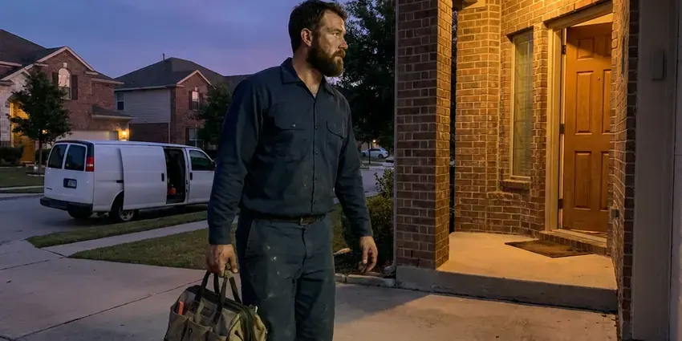

Plumbing Inspection in Dayton, OH
See what is behind your walls and under your slab. HRL Plumbing provides plumbing inspections in Dayton, OH with video and photos.
- Fast Scheduling
- Written Photo Reports
- Licensed Plumbers
- Sewer Camera Video Included
Schedule a Detailed Plumbing Inspection in Dayton, OH
One inspection can save thousands in surprise repairs.
Detailed Plumbing Inspection With Camera Video in Dayton, OH
HRL Plumbing performs full plumbing inspections that cover supply pipe material, water pressure, fixtures, shutoff valves, water heaters, softeners, gas connections and the main sewer line. We run a camera through the sewer and test for leaks at the meter. You get photos and a priority list in writing, which makes it easy to see what needs work now and what can wait.
Our expertise includes:
- Recorded sewer video with line locating
- Sewer camera inspection of the main sewer
- Gas connector and shutoff checks

Additional Plumbing Maintenance Services in Dayton, OH
Our maintenance and specialty plumbing services in Dayton, OH protect your home year-round and extend the life of every system.


Customers
Why Choose HRL Plumbing for Plumbing Inspection in Dayton, OH?
Finding a problem early usually means fixing it for a fraction of the later cost. A small leak found at the baseboard is an easy fix, and the same leak found months later can mean new floors and drywall. Timing matters a lot.
- Clear Answers, You know exactly where your plumbing stands and what to do next.
- Camera Proof, We record sewer video so you can see roots, bellies or breaks yourself.
- Licensed Plumbers, Your inspection is done by a licensed plumber, not a general inspector.
Citywide Coverage
Our plumbers inspect homes in every neighborhood of Dayton, from older districts to new subdivisions. Every truck carries a sewer camera. Video, pressure readings and a meter test all happen in one trip, wherever in town the house is.
Experienced Team
Our plumbers have years of experience with Ohio homes and the problems they develop. They have fixed what they inspect. After hundreds of slab leaks, sewer breaks and heater failures, they recognize the early signs long before a stain or backup appears.
Safety-First Approach
We test for gas leaks at appliance connections and note any venting concerns on gas water heaters. If we find an urgent hazard, we tell you right away.
Trusted Certified Dayton Plumbing Services Professionals
At HRL Plumbing, we are proud to offer certified plumbing services throughout Dayton, OH. Those papers on the wall mean something. Our plumbers hold recognized industry credentials, and they follow strict safety and quality rules on every repair, installation and maintenance call we run.
Call Us Now PHCC Plumbing Contractor Recognition
PHCC Plumbing Contractor Recognition Better Business Bureau (BBB) Accreditation
Better Business Bureau (BBB) Accreditation Angi Certified Pro
Angi Certified Pro ISO 9001 Quality Management Certification
ISO 9001 Quality Management CertificationPlumbing Inspection Work in Dayton, OH
Water Heater Safety Inspection in Dayton
A water heater stores a lot of hot water under pressure, so safety items matter. Our checks include the relief valve and its discharge line, the expansion tank and the drain pan. We check gas units for draft. Backdrafting heaters can push combustion gases indoors, which is why we test the vent and report problems before we leave.

Sewer Line Camera Inspection in Dayton, OH
Older homes in Dayton often have cast iron or clay sewer pipe that cracks, scales up or lets roots in at the joints. Our camera shows each defect, and the onboard counter tells us exactly how far from the cleanout it sits. Then we locate it. Knowing the depth and location means a repair estimate can be accurate, and it helps decide between a spot repair, a liner or a full replacement.
Residential Plumbing Inspections in Dayton
A full home inspection covers the system from the water meter to the sewer connection. We check every visible pipe for corrosion and leaks, run each fixture for flow and drainage and test the water heater, the main shutoff and the angle stops. Pressure gets measured too. We note anything above 80 psi.
Hard Water Damage Assessment in Dayton
Homeowners around Dayton often install a softener to protect water heaters and reduce spotting on fixtures. Hard water leaves scale in pipes, fixtures and water heaters. We look for crusty aerators, scaled showerheads, slow-filling toilets and sediment in the water heater, and we can run a simple hardness test on the spot. Then we explain your options. Softeners, filters and scale reducers all help, and we suggest the one that matches the reading we took.
Leak Detection and Slab Screening in Dayton
A spinning water meter with all fixtures off is a clear sign of a hidden leak. We also check for warm floor spots. We test the meter, watch for pressure loss and look for damp baseboards and mildew, and on slab homes we follow up with acoustic and thermal equipment to pinpoint the leak. Catching a slab leak early limits damage to floors and foundations.
Plumbing Inspection Costs in Dayton, OH
A basic plumbing inspection usually costs $150 to $300, and adding a sewer camera usually brings it to $250 to $500. Larger homes are priced by scope. Next to a surprise sewer replacement at $4,000 to $15,000 or more, an inspection costs little, and the price is set when you schedule.
Pre-Purchase Inspection With Sewer Video in Dayton
Plumbing problems are some of the most expensive surprises after closing. Our pre-purchase inspection covers the supply pipe type, the sewer condition on video, the water heater's age and every fixture. Your agent gets the report. Many buyers use our findings to ask for repairs or credits, and the sewer video alone has saved buyers from five-figure surprises.

Commercial Plumbing Inspections in Dayton, OH
Commercial buildings have equipment homes do not, so our commercial inspections cover more ground. Backflow devices, grease traps, large heaters, flushometers and the main sewer are all part of it. Inspectors like documentation. The written report helps facility managers plan and budget repairs before a health inspector or the water provider writes them up.
Plumbing Inspections Near You in Dayton, OH
A local plumber can usually fit an inspection in within a day or two. That matters on a deadline. We are in town daily, which makes it easier to meet your agent's timing or your own schedule without a long wait.
Local plumbers know which problems show up most in Dayton homes. Local conditions shape the findings. We know which neighborhoods tend to have clay sewers with roots, which ones were built with polybutylene and where pressure runs high enough to need a reducing valve.
HRL Plumbing at a Glance
- Licensed and insured plumbers serving Dayton, OH
- Same-day appointments and 24/7 emergency response
- Clear written estimates, no hidden fees
- 4.9-star rated by 673+ Ohio customers
Dayton Map
Dayton Information
- Population
- 135,512
- Area codes
- 937/326/513
- Service area
- Dayton and towns within a 40 mile drive
- Nearby
- Kettering, Middletown, Springfield, Hamilton
A plumbing inspection in Dayton, OH catches slow leaks and sewer damage early while they are still cheap to fix. Tree roots and shifting clay often crack older clay or cast iron sewer laterals, leading to slow drains and backups.
Expert Services
Reach out to HRL Plumbing for honest, reliable plumbing from people who know the trade in Dayton, OH.
Our Specialized Plumbing Services in Dayton, OH
At HRL Plumbing, you get every kind of plumbing service from one company across Dayton, OH. We go from leak detection all the way to full system installations, for homes and commercial buildings, and we do it quickly at a fair price. Here are the core services we offer:


How a Plumbing Inspection Works in Dayton, OH
HRL Plumbing inspects every part of your plumbing in Dayton, OH in a set order, then writes it up.
Book the Inspection
Call (740) 449-7505 or use the form to schedule. We ask about the property and your timeline and give you a price.
Inspect the System
A licensed plumber checks the pipe, fixtures, heater and sewer using cameras and gauges.
Get the Report
You get a written report with ranked findings, photos and price ranges for anything that needs work.
Frequently Asked Questions About Plumbing Inspection in Dayton
A standard plumbing inspection in Dayton, OH usually costs $150 to $350. Size changes the price. The base price covers pipe, fixtures, the heater, drains and pressure, and the sewer camera is usually a separate line since it adds time and equipment. We quote it on the phone.
Every one to two years works for most homes. Some houses need it yearly. If your home has original supply pipe, large trees near the sewer or a history of leaks, a yearly inspection catches problems while they are still small and cheap to fix.
Looking for drips and watching the meter is worth doing on your own. It has limits. A plumber's tools reach the sewer and the pipe inside walls, which is where the costly problems usually are.
You can do a basic check by looking under sinks and watching your water meter. A plumber goes further. Professionals bring sewer video, pressure readings, leak tracing and code knowledge, which find what a visual look misses.
Our technicians inspect all major water heater brands, including Rheem, AO Smith and Bradford White. Tankless units are covered. We also check Rinnai and Noritz tankless heaters and the common fixture brands found in most homes, so the brand on your equipment will not limit what we can inspect.
Most homes do well with an inspection every one to two years. Buying a home is another time. If you are purchasing a property, live in an older house or have had recent leaks or backups, a yearly check gives you a better chance of catching the next problem early.
In most cases, yes. The water meter is the first test. If the leak indicator moves with everything off, we use acoustic listening gear and a thermal camera to trace the leak behind walls, under floors or in the slab without opening anything at random.
We can include estimated repair ranges in the report and firm quotes if you want us to do the work. You are never required to hire us.
What People Are Saying About Our Plumbing Experts?

Greg S.
I manage a small strip center with six tenants. HRL Plumbing handles our annual backflow testing and fixed a recurring clog in the shared sewer line that had been backing into the nail salon. Their reports come in clean and on time.
Commercial Plumbing · Middletown, OH
Angela D.
Our sump pump quit during a storm and the water was an inch from the basement carpet. HRL Plumbing put in a new pump with a battery backup that same evening. We have had two heavy rains since. It kicked on both times.
Sump Pump · Dublin, OHMark T.
The floor drain in our office break room backed up every few weeks. The plumber ran a cable, then put a camera down and found roots at a joint about thirty feet out. Seeing it on the screen made the decision easy.
Drain Cleaning · Kettering, OH
James P.
Our restaurant had a slow leak at the hand sink that was rotting the cabinet base. HRL Plumbing came in at six in the morning before prep, replaced the trap and both supply lines, and was packed up before my first cook clocked in.
Commercial Plumbing · Cincinnati, OH
Daniel K.
A pipe burst in the garage ceiling at 11 at night. Someone answered on the second ring, and the plumber was in my driveway about fifty minutes later. He shut off the main, cut out the split section, and had water back on before 2 am.
Emergency Plumbing · Kettering, OH
Lisa C.
Water was pouring out from under the washing machine on a holiday weekend. HRL Plumbing talked me through closing the valves over the phone and had a plumber at the house within ninety minutes. It was a burst fill hose.
Emergency Plumbing · Cincinnati, OH